Does the chosen configuration reproduce the stratosphere on years it was not tuned on? Scored against CLaMS, WACCM6 and ERA5 for the same years, in sample (2006-2010) and out of sample (2011-2019).
Errors are in units of each metric's bound: ≤ 1 passes, ≤ 1.5 is near, above fails. Lower is better.
AL7h is the dry jcm-strat configuration chosen in Phases 22-29: the Jucker et al. (2013) relaxation temperature with half of the AL7 correction (Phase 25), Hines gravity-wave drag launched at 634 hPa, fixed Lott-Miller orographic drag, ERA5 nudging below 400 hPa (tau 6 h) and the zonal-mean equatorial wind nudged to ERA5 between 90 and 1 hPa (|lat| < 15 deg, tapering to zero at 25 deg, tau 1 d). T63 L95, 12-minute step, one chain from 1990. This record asks whether that model reproduces stratospheric dynamics, and separates what it gets right on its own from what was put in.
| class | what | metrics |
|---|---|---|
| imposed | troposphere below 400 hPa (ERA5 nudging); zonal-mean equatorial wind 90-1 hPa (QBO nudging) | not scored; the QBO panel is shown as a check that the nudging does its job |
| tuned | the T_e correction was fitted to ERA5 extratropical temperature 400-1 hPa over 2005-04..2008-01 | C2 (polar-cap T at 50 hPa) |
| constrained | extratropical jets: tied to the tuned temperature by thermal wind, but not fitted themselves | C1 (jet speed and latitude, 50 and 10 hPa) |
| emergent | nothing in the model is fitted to these | A (age of air, 150 hPa clock), B (w*, mass flux), D (variability), tropical T |
| not scored | kept in the validation and the tables, left out of every score: winds at 10 hPa and above (10 hPa jets, vortex variability D1-D2, final warmings D4-fw), the number of major SSWs (D3), the heat-flux and age-w* relations (D6, D7), age on the surface clock against CLaMS and the old CLaMS-based A2 | shown faded in the figure and the metric table |
Out of sample, AL7h scores as well as in sample. On 2011-2019, years the temperature correction never saw, the combined A-C error is 0.78 with 13 / 17 criteria passed. On 2006-2010 it is 0.83 with 13 / 17 passed. An error of 1 means on average at the edge of the bounds, which are about the size of the CLaMS-WACCM6 disagreement. Group D (variability) is 0.25 on 2006-2010 and 0.26 (3 / 3 pass) on 2011-2019.
What it gets right on its own. The entry age at 55 hPa, the tropical upwelling above 70 hPa, the 70 hPa mass flux, the shape and seasonality of the Brewer-Dobson cells, and the latitude of both polar-night jets. The tuned polar-cap temperatures stay on ERA5 out of sample, so the correction is not overfitted to its fitting years.
What it gets wrong, in the score. One scored metric fails: upwelling at 100 hPa is a third of the reference. Near the bound: the age step from the tropics to mid-latitudes (the tropical pipe is leakier than CLaMS), the 70-10 hPa transit time (a little fast) and w* at 50 hPa (a little fast).
What it gets wrong, outside the score. The tropical tropopause is about 11 K too warm and the air near it is 0.8 yr too old on the surface clock. Both winter jets are 10-20 % weak at 10 hPa, and the NH vortex varies too little, with too few major sudden warmings. The NH polar cap responds to the 100 hPa heat flux at half the ERA5 rate, and the tropical age rises too slowly with upwelling. These stay in the validation but count towards no score: winds at 10 hPa and above, SSW counts, the heat-flux and age-w* relations and the surface clock are left out by choice. All are listed under 'Failures'.
| group (scored metrics only) | class | 2006-2010 | 2011-2019 |
|---|---|---|---|
| A age of air | emergent | 0.93 | 0.95 |
| B residual circulation | emergent | 1.05 | 1.03 |
| C polar vortex (50 hPa jets, polar-cap T) | C1 constrained, C2 tuned | 0.52 | 0.37 |
| combined A-C | 0.83 | 0.78 | |
| criteria passed A-C | 13 / 17 | 13 / 17 | |
| D variability | emergent | 0.25 | 0.26 |
| criteria passed D | 3 / 3 | 3 / 3 |
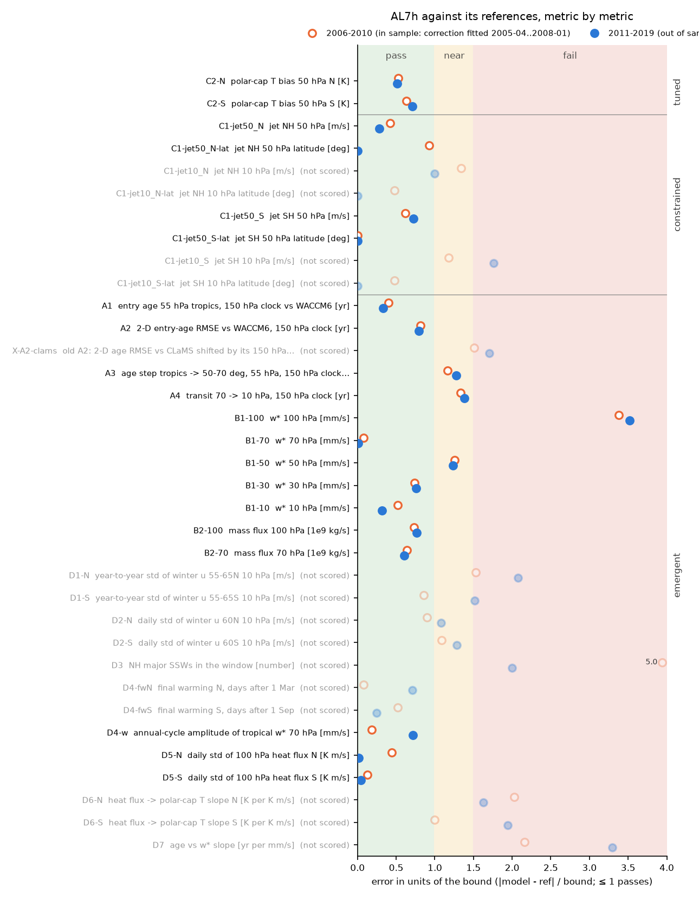
Group A counts only the 150 hPa clock. A2 is the cos-weighted RMSE of the 150 hPa clock against the WACCM6 REF-D1 2-D entry age for the same years, 100-5 hPa, |lat| ≤ 80, bound 0.4 yr: 0.32 yr in 2006-2010 and 0.32 yr in 2011-2019 (bias -0.07 / -0.08). The old A2 compared against CLaMS shifted by CLaMS' own tropical 150 hPa age (0.09 yr): 0.60 / 0.68 yr, mostly a uniform offset of -0.43 / -0.53 yr. WACCM6 itself differs from shifted CLaMS by 0.48 / 0.58 yr with the same offset, so that offset comes from the shift, not from the model. The old A2 is kept as a faded row. Entry age at 55 hPa is 1.00 yr in 2006-2010 and 1.02 yr in 2011-2019 against 1.11 yr (A1, pass). The age step from the tropics to 50-70 deg is 2.18 yr against 2.82 (A3), so the tropical pipe is leakier than CLaMS, and the transit from 70 to 10 hPa is 2.13 yr against 2.3-3.2 (A4).
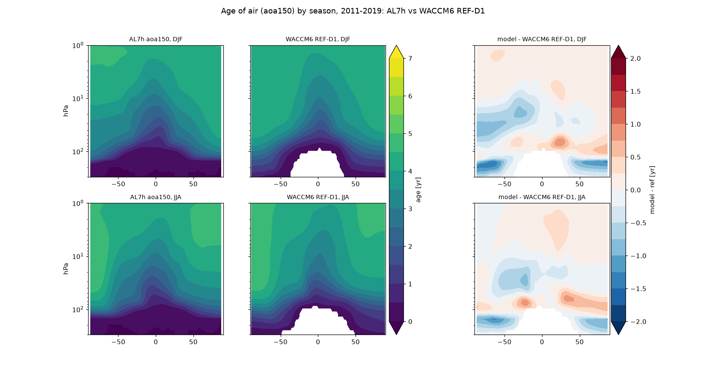
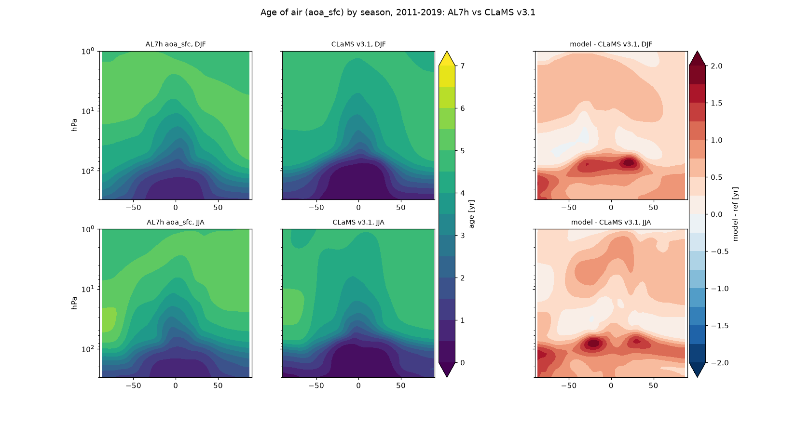
w* at 70, 30 and 10 hPa is within the bounds (0.21, 0.32, 0.43 mm/s against 0.21, 0.26, 0.47); 50 hPa is a bit fast (0.29 vs 0.20). At 100 hPa it is 0.14 mm/s against 0.40: the shallow branch at the tropopause is the main circulation failure, in sample and out of sample alike. The mass flux at 100 hPa (9.44, ref 10.9 x 1e9 kg/s) passes, so the deficit is in the tropical core of the upwelling rather than in the total.
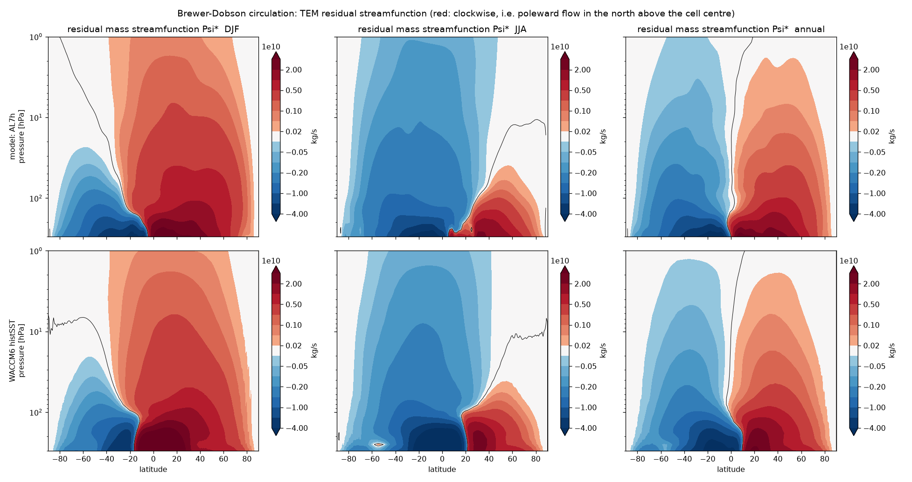
Group C counts the 50 hPa jets and the polar-cap temperature; the 10 hPa jets are shown but not scored. NH 50 hPa jet 16.8 m/s against 18.2, NH 10 hPa 24.0 against 29.0, SH 50 hPa 44.6 against 48.2, SH 10 hPa 66.3 against 75.1. The latitudes are right everywhere. The polar-cap temperature at 50 hPa, the quantity the correction was fitted to, stays within 1.5 K of ERA5 out of sample (C2).
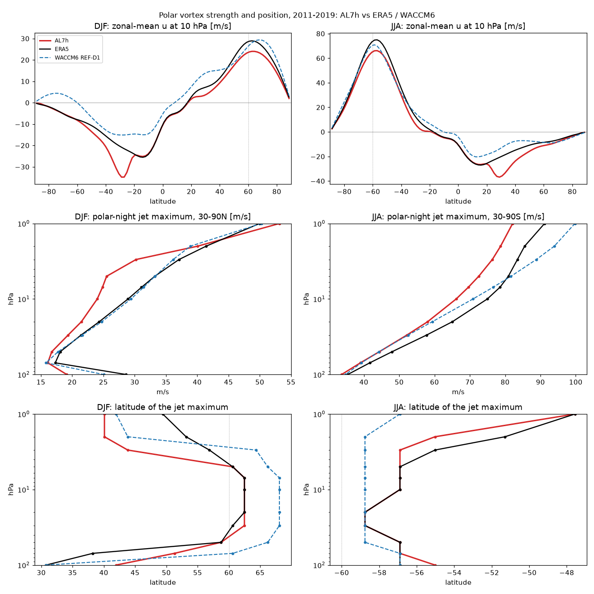
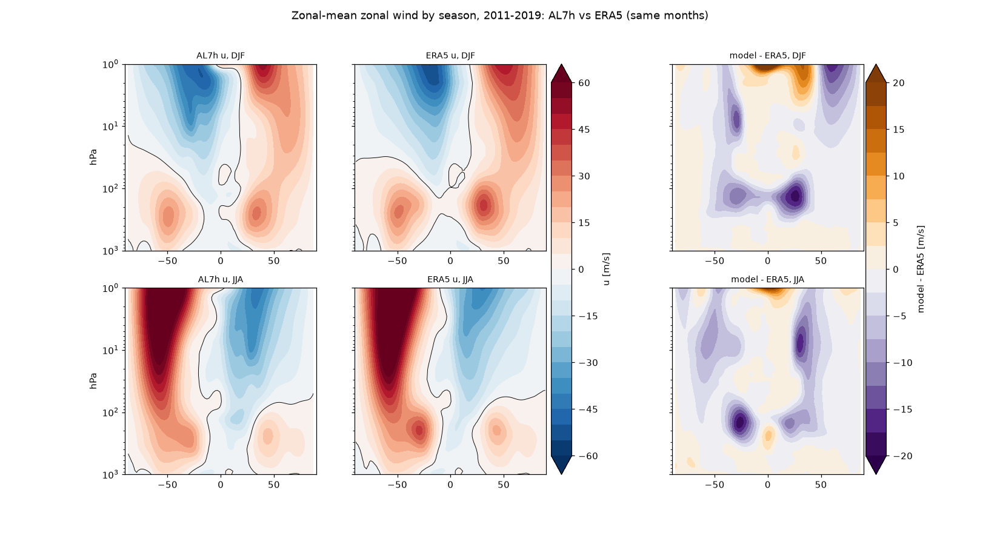
The tropical tropopause (100 hPa) is 203.4 K against ERA5 192.1 K in DJF. That warm tropopause is consistent with the weak 100 hPa w* (less adiabatic cooling), and it is the same in both periods, so it is a property of the configuration, not of the years.
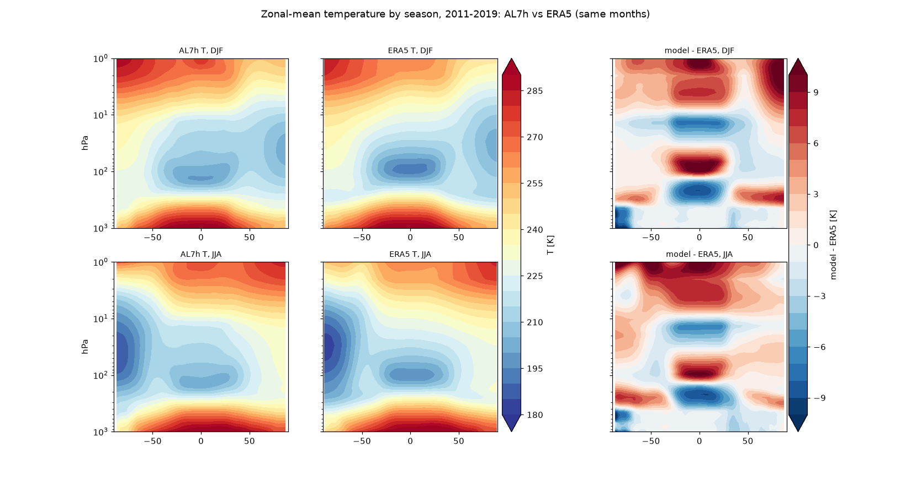
QBO standard deviation at 10/20/30/50 hPa is 16.9 / 18.8 / 16.8 / 9.8 m/s against ERA5 17.7 / 19.5 / 17.3 / 10.3. The SAO at 1 hPa, at the top of the nudged layer, has 14.4 m/s amplitude against ERA5 27.6.
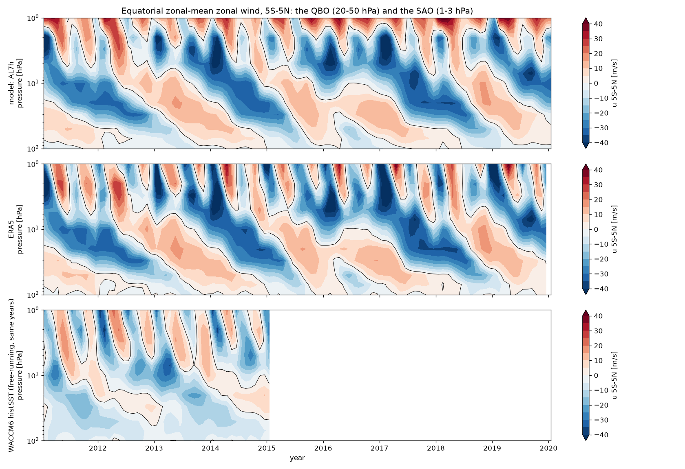
Group D counts the w* annual cycle (D4-w) and the heat-flux variability (D5). The 10 hPa vortex variability (D1, D2), the SSW count (D3), the final-warming dates (D4-fw), the heat flux -> polar-cap T relation (D6) and the age-w* relation (D7) are shown but not scored. Group D error 0.26 on 2011-2019 (3 / 3 pass) against 0.25 on 2006-2010. NH major SSWs: 6.00 against ERA5 4.00. NH heat-flux response slope 0.65 against 1.05. Age-w* slope -1.04 against -3.98.
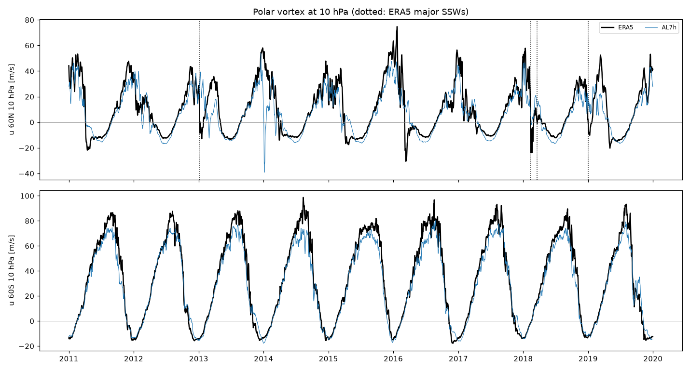
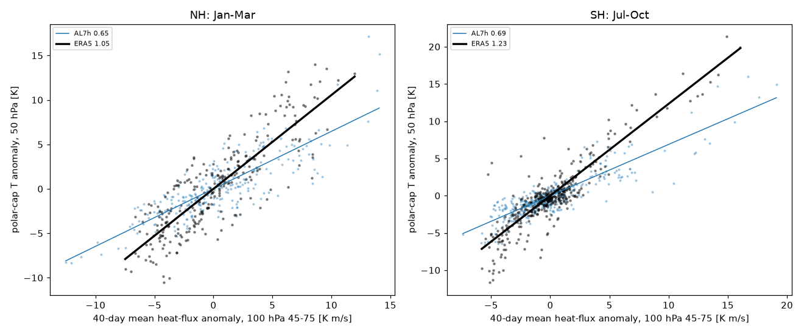
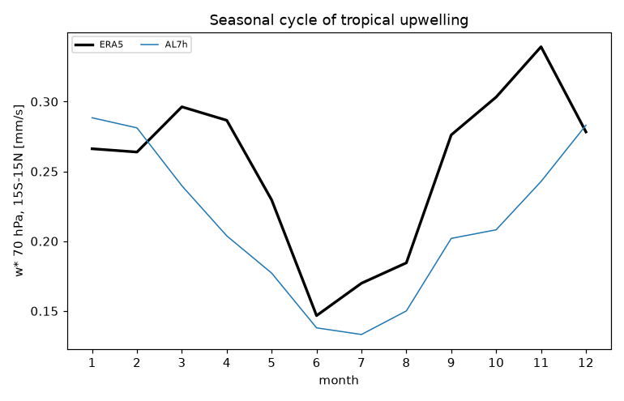
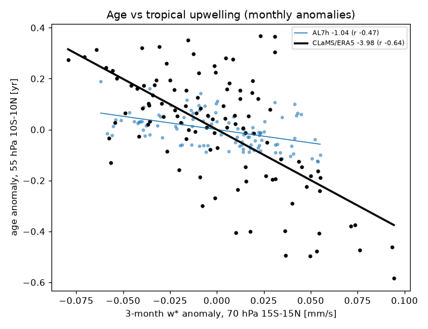
Where AL7h is outside its bounds or clearly off ERA5. They are the same in both periods, so they belong to the configuration rather than to particular years.
| failure | scored | 2006-2010 | 2011-2019 | reference |
|---|---|---|---|---|
| w* at 100 hPa, tropics [mm/s] (B1-100) | yes | 0.14 | 0.14 | 0.40 |
| old A2: 2-D age RMSE vs shifted CLaMS [yr] (X-A2-clams) | no | 0.60 | 0.68 | 0 |
| age step tropics to 50-70 deg at 55 hPa [yr] (A3) | yes | 2.26 | 2.18 | 2.82 |
| surface-clock age 55 hPa tropics vs CLaMS [yr] | no | 2.31 | 2.31 | 1.56 |
| SH jet at 10 hPa, JJA [m/s] (C1-jet10_S) | no | 66.0 | 66.3 | 75.1 |
| NH jet at 10 hPa, DJF [m/s] (C1-jet10_N) | no | 18.5 | 24.0 | 29.0 |
| T at 100 hPa, tropics, DJF [K] | no | 203.0 | 203.4 | 192.1 |
| T at 1 hPa, tropics, DJF [K] | no | 275.6 | 276.0 | 264.8 |
| SAO amplitude at 1 hPa [m/s] | no | 16.1 | 14.4 | 27.6 |
| NH major SSWs in the window (D3) | no | 3.00 | 6.00 | 4.00 (8.00 in 2006-2010) |
| heat flux -> NH polar-cap T slope (D6-N) | no | 0.53 | 0.65 | 1.05 (0.97 in 2006-2010) |
| age vs w* slope [yr per mm/s] (D7) | no | -1.88 | -1.04 | -3.98 (-4.52 in 2006-2010) |
| year-to-year std of NH winter u, 10 hPa [m/s] (D1-N) | no | 3.50 | 4.52 | 10.5 (6.51 in 2006-2010) |
Faded rows are kept for the validation but do not count towards any score: winds at 10 hPa and above, the number of major SSWs, the heat-flux and age-w* relations (D6, D7), the surface-clock age against CLaMS and the old CLaMS-based A2.
| id | metric | class | scored | ref 2006-2010 | model 2006-2010 | ref 2011-2019 | model 2011-2019 |
|---|---|---|---|---|---|---|---|
| A1 | entry age 55 hPa tropics, 150 hPa clock vs WACCM6 [yr] | emergent | yes | 1.10 | 1.00 pass | 1.11 | 1.02 pass |
| A2 | 2-D entry-age RMSE vs WACCM6, 150 hPa clock [yr] | emergent | yes | 0.00 | 0.32 pass | 0.00 | 0.32 pass |
| X-A2-clams | old A2: 2-D age RMSE vs CLaMS shifted by its 150 hPa age [yr] | emergent | no | 0.00 | 0.60 fail | 0.00 | 0.68 fail |
| A3 | age step tropics -> 50-70 deg, 55 hPa, 150 hPa clock [yr] | emergent | yes | 2.84 | 2.26 near | 2.82 | 2.18 near |
| A4 | transit 70 -> 10 hPa, 150 hPa clock [yr] | emergent | yes | 2.30-3.20 | 2.15 near | 2.30-3.20 | 2.13 near |
| X-sfc-tropics | surface-clock age 55 hPa tropics vs CLaMS [yr] | emergent | no | 1.44 | 2.31 no bound | 1.56 | 2.31 no bound |
| X-sfc-50-70N | surface-clock age 55 hPa 50-70N vs CLaMS [yr] | emergent | no | 3.90 | 4.49 no bound | 4.21 | 4.40 no bound |
| X-sfc-50-70S | surface-clock age 55 hPa 50-70S vs CLaMS [yr] | emergent | no | 4.47 | 4.70 no bound | 4.33 | 4.46 no bound |
| B1-100 | w* 100 hPa [mm/s] | emergent | yes | 0.40 | 0.14 fail | 0.40 | 0.14 fail |
| B1-70 | w* 70 hPa [mm/s] | emergent | yes | 0.21 | 0.22 pass | 0.21 | 0.21 pass |
| B1-50 | w* 50 hPa [mm/s] | emergent | yes | 0.20 | 0.29 near | 0.20 | 0.29 near |
| B1-30 | w* 30 hPa [mm/s] | emergent | yes | 0.26 | 0.32 pass | 0.26 | 0.32 pass |
| B1-10 | w* 10 hPa [mm/s] | emergent | yes | 0.47 | 0.40 pass | 0.47 | 0.43 pass |
| B2-100 | mass flux 100 hPa [1e9 kg/s] | emergent | yes | 10.9 | 9.50 pass | 10.9 | 9.44 pass |
| B2-70 | mass flux 70 hPa [1e9 kg/s] | emergent | yes | 6.05 | 6.80 pass | 6.05 | 6.76 pass |
| C1-jet50_N | jet NH 50 hPa [m/s] | constrained | yes | 16.4 | 14.3 pass | 18.2 | 16.8 pass |
| C1-jet50_N-lat | jet NH 50 hPa latitude [deg] | constrained | yes | 56.9 | 53.2 pass | 58.8 | 58.8 pass |
| C1-jet10_N | jet NH 10 hPa [m/s] | constrained | no | 25.2 | 18.5 near | 29.0 | 24.0 pass |
| C1-jet10_N-lat | jet NH 10 hPa latitude [deg] | constrained | no | 62.5 | 60.6 pass | 62.5 | 62.5 pass |
| C1-jet50_S | jet SH 50 hPa [m/s] | constrained | yes | 46.7 | 43.6 pass | 48.2 | 44.6 pass |
| C1-jet50_S-lat | jet SH 50 hPa latitude [deg] | constrained | yes | -56.9 | -56.9 pass | -56.9 | -56.9 pass |
| C1-jet10_S | jet SH 10 hPa [m/s] | constrained | no | 71.9 | 66.0 near | 75.1 | 66.3 fail |
| C1-jet10_S-lat | jet SH 10 hPa latitude [deg] | constrained | no | -56.9 | -58.8 pass | -56.9 | -56.9 pass |
| C2-N | polar-cap T bias 50 hPa N [K] | tuned | yes | 0.00 | -1.05 pass | 0.00 | -1.03 pass |
| C2-S | polar-cap T bias 50 hPa S [K] | tuned | yes | 0.00 | 1.27 pass | 0.00 | 1.42 pass |
| D1-N | year-to-year std of winter u 55-65N 10 hPa [m/s] | emergent | no | 6.51 | 3.50 fail | 10.5 | 4.52 fail |
| D1-S | year-to-year std of winter u 55-65S 10 hPa [m/s] | emergent | no | 2.16 | 1.52 pass | 2.62 | 1.41 fail |
| D2-N | daily std of winter u 60N 10 hPa [m/s] | emergent | no | 15.0 | 11.4 pass | 16.5 | 11.9 near |
| D2-S | daily std of winter u 60S 10 hPa [m/s] | emergent | no | 5.25 | 3.78 near | 5.63 | 3.83 near |
| D3 | NH major SSWs in the window [number] | emergent | no | 8.00 | 3.00 fail | 4.00 | 6.00 fail |
| D4-fwN | final warming N, days after 1 Mar | emergent | no | 44.4 | 43.6 pass | 38.7 | 45.8 pass |
| D4-fwS | final warming S, days after 1 Sep | emergent | no | 89.8 | 84.6 pass | 75.2 | 77.7 pass |
| D4-w | annual-cycle amplitude of tropical w* 70 hPa [mm/s] | emergent | yes | 0.19 | 0.20 pass | 0.19 | 0.16 pass |
| D5-N | daily std of 100 hPa heat flux N [K m/s] | emergent | yes | 11.5 | 13.1 pass | 11.8 | 11.7 pass |
| D5-S | daily std of 100 hPa heat flux S [K m/s] | emergent | yes | 7.90 | 8.21 pass | 7.04 | 7.13 pass |
| D6-N | heat flux -> polar-cap T slope N [K per K m/s] | emergent | no | 0.97 | 0.53 fail | 1.05 | 0.65 fail |
| D6-S | heat flux -> polar-cap T slope S [K per K m/s] | emergent | no | 0.77 | 0.57 pass | 1.23 | 0.69 fail |
| D7 | age vs w* slope [yr per mm/s] | emergent | no | -4.52 | -1.88 fail | -3.98 | -1.04 fail |
| grid | per 12-min step | per 6 h of model time | per 10-day chunk | per model year (wall clock, chain) |
|---|---|---|---|---|
| L95 (AL7h) | 17.5 ms | 0.53 s | 21.0 s | 15.6 min |
| strat84 (AL7hL84, mesosphere 22 -> 11 layers) | 15.8 ms | 0.48 s | 19.0 s | 13.8 min |
Bounds and errors as in scripts/success_metrics.py (Susanne 2026-10-23): err = |model - ref| / bound, or |ln(model/ref)| / ln(factor) for w* and mass flux; pass err ≤ 1, near ≤ 1.5, fail above. Group means are plain means over their metrics; the combined score is the mean of A, B and C.
References for the same years as the model window: CLaMS v3.1 age (ERA5-driven) and WACCM6 REF-D1 entry age (SCORE_REF_YEARS), ERA5 monthly zonal means for winds and temperature, WACCM6 histSST TEM for w* and mass flux, CDS ERA5 daily zonal means for group D.
Periods: the correction was fitted on 2005-04..2008-01, so 2006-2010 overlaps it (in sample) and 2011-2019 does not (out of sample). Both periods are the same continuous chain p25_AL7h, started in 1990.
Run cost measured on one H100, median over the 2015 (L95) and 2008 (strat84) segments.
Generated by scripts/make_phase31_report.py from docs/outputs/31_al7h_validation. PDF: docs/outputs/jcm-strat_phase31_al7h_validation.pdf.